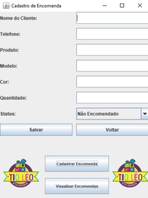

Sistema de
Encomendas

Sobre o Projeto
Sistema desenvolvido para a loja Tio Léo Utilidades com o objetivo de gerenciar de forma eficiente todas as encomendas realizadas pelos clientes. Permite cadastrar, visualizar, atualizar e controlar o status de cada encomenda, facilitando o acompanhamento e organização do negócio.
O projeto foi criado para resolver problemas de organização e controle de pedidos, permitindo à loja ter controle sobre as encomendas em andamento e concluídas, além de facilitar a comunicação com os clientes sobre o status de seus pedidos.
Objetivos
- Cadastro e controle de encomendas
- Gerenciamento de status (pendente, em produção, concluído, entregue)
- Organização e busca de informações
- Interface amigável e fácil de usar
- Armazenamento seguro dos dados
Tecnologias
Como foi feito
Java: Linguagem principal para desenvolvimento da lógica de negócio e funcionalidades do sistema. O Java proporciona uma base sólida e confiável para aplicações desktop.
SQLite: Banco de dados leve, eficiente e sem necessidade de configuração de servidor. Ideal para aplicações desktop, armazenando todos os dados de forma organizada e segura.
Swing: Framework nativo do Java para criar interfaces desktop. A interface foi projetada para ser intuitiva e fácil de usar, com campos claros e navegação simples.